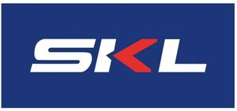

Trade Mark Journal No.2025/047 21 November 2025
WO0000001871343 (1,3,7,9,11,17,21)
Office of origin: Italy
Date of International Registration:3 April 2025
Date of designation in the UK:
3 April 2025

The mark contains the colours blue, red and white.
International priority date claimed: 19 March 2025
(Italy)
(302025000045777)
- Class 1
- Decalcifying preparations [industrial] in powder form; decalcifying preparations [industrial] in liquid form; surfactants for use in detergent compositions; activated carbons; carbon for filters; disincrustants.
- Class 3
- Cleaning preparations; descaling preparations for household purposes; degreasers for cleaning purposes; scouring liquids; scouring substances; degreasing sprays; detergents for machine dishwashing; detergents; washing creams; detergent tablets for coffee machines.
- Class 7
- Injectors for machines; pipes [fitted parts of machines]; anti-vibration mountings for machines; plastics pipes [fitted parts of machines]; filters for machines; vacuum cleaner bags; dust filters and bags for vacuum cleaners; belts for machines; springs [parts of machines]; machine coupling components, except for land vehicles; fans being parts of machines; brushes [parts of machines]; pulleys [parts of machines]; pulleys [parts of motors]; drums [parts of machines]; utensil baskets for dishwashing machines; driving devices for machines; electric vacuum cleaners and their components; cylinder blocks [parts of machines]; parts, components, and accessories for electric kitchen appliances, washing machines, dishwashing machines and vacuum cleaners included in class 07 including hoses, hoses, nozzles, dust bags, and filters; parts, components and accessories for electric kitchen appliances, washing machines and dishwashers; parts, components and accessories for electric kitchen appliances, washing machines and dishwashing machines.
- Class 9
- Thermometers; electronic scales; digital thermometers, other than for medical purposes; resistances, electric; thermostats; push button switches (electrical -).
- Class 11
- Filters for air extractor hoods; air cleaning filters [parts of air cleaning machines or installations]; filters for drinking water; reverse osmosis membrane filters for water treatment; dust filters; filters for air conditioning; filters for use with heating apparatus; faucet filters [plumbing fittings]; filters for use with apparatus for ventilating; water treatment filters; light bulbs; light bulbs, electric; halogen light bulbs; light-emitting diode [LED] light bulbs; fluorescent light bulbs; doors for refrigerators; fans for air conditioning apparatus; ventilating exhaust fans; plate warmers; electric cooktops; hot plates; electric hotplates; cooking hobs; parts, components and accessories for cooking hobs and hot plates, air extraction hoods, air conditioners, refrigerators, ovens, dryers included in class 11; filters for coffee machines; parts, components, and accessories for coffee machines, refrigerators, ovens and dryers; parts, components and accessories for coffee machines, refrigerators, ovens.
- Class 17
- Flexible plastic pipes for conveying natural gas; flexible tubes (non-metallic -) for the conducting of gaseous media; flexible hoses, not of metal; flexible tubes, not of metal; hose pipes made of rubber; non-metallic fittings for pipes; fittings, not of metal, for flexible pipes.
- Class 21
- Cleaning articles; cloths for cleaning; cleaning instruments, hand-operated; scrapers for household purposes; glass scrapers for cleaning purposes.
OMNIA COMPONENTS SRL
Representative: STUDIO TORTA S.p.A., VIA VIOTTI 9, I-10121 TORINO, ITALY